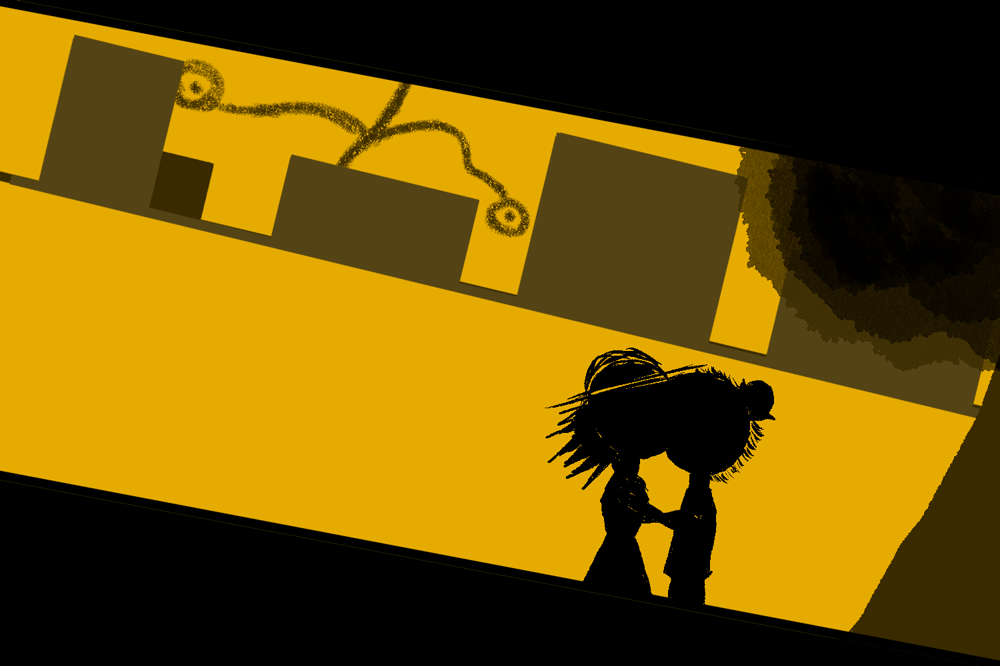
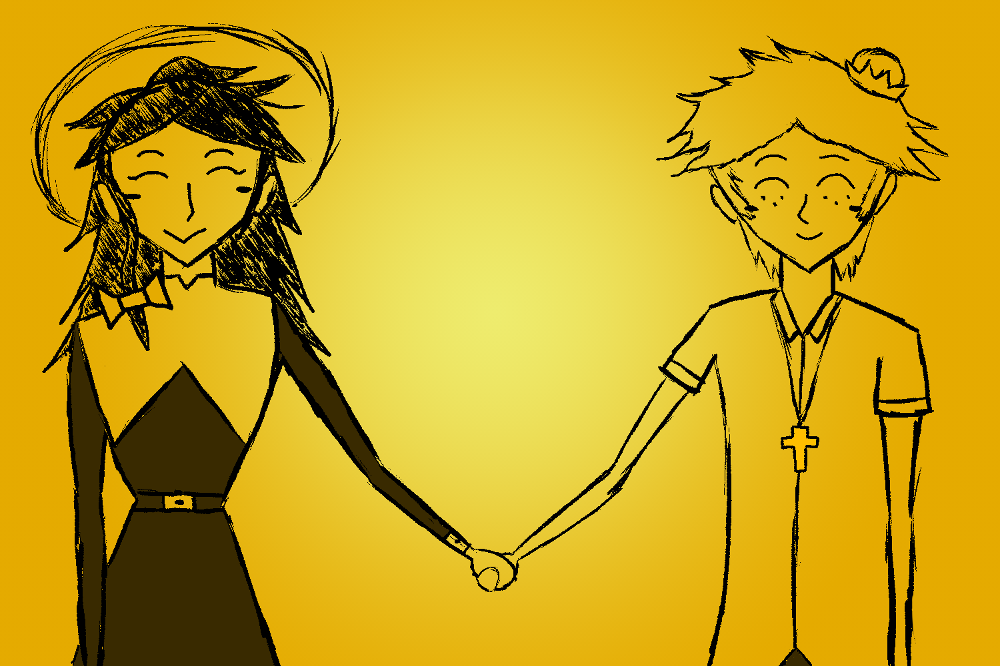

Welcome to the “Letters” website! Unfortunately, the site can only be accessed via desktop. Nevertheless, click here to find links for depression and COVID-19 helplines.
On my way to the hill, I noticed that there were quite a few people going about their day as normal.
It’s almost as if the Mandrake never existed.
Maybe everyone’s just as fed up as I am and wants freedom?
… After a while I finally make it to the spot.
Hey… It took us a loooong week to get here, huh?
You could say that again. I see you kept my cross.
There’s no way I could let it collect dust, it kept me company!
So did your bowtie, it was the reason I messaged you. I’m really sorry I stayed quiet for so long.
C’mon, I share as much of the blame as you. Honestly, I’m really thankful for that letter, it really saved me.
I’m so glad to have someone care about me… I… I…
I really missed you.
Someday, when this crisis is over…
I would like to create many precious memories with you.